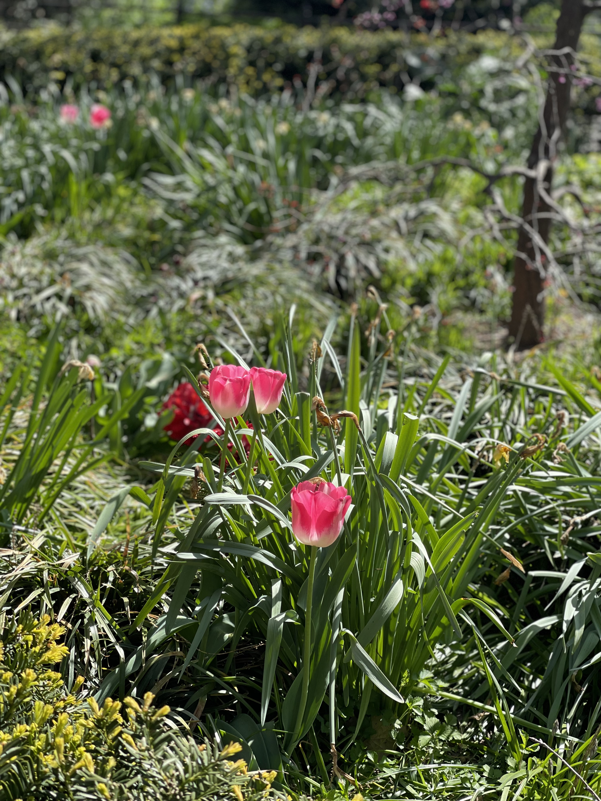
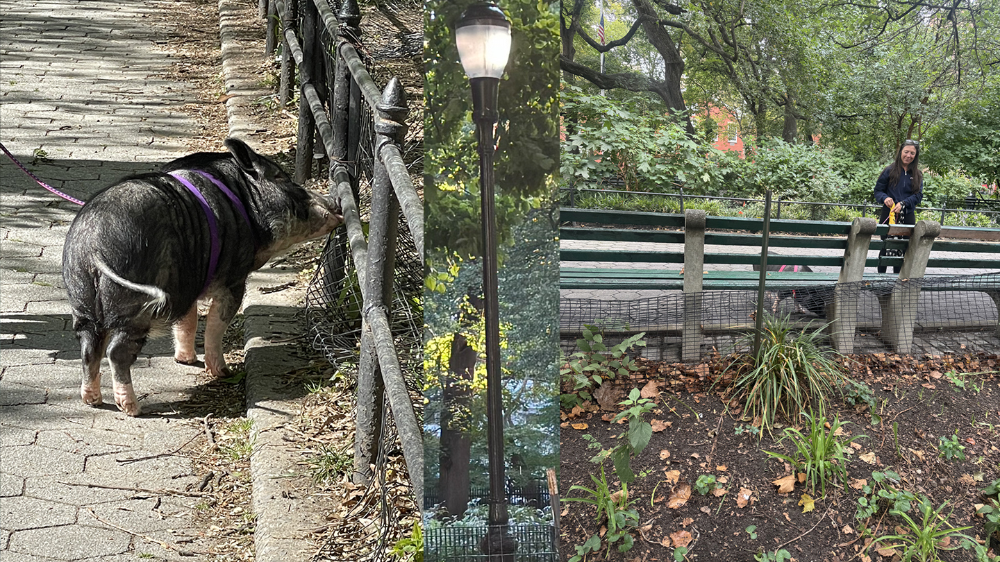

Stuyvesant Park Postcard
Stuyvesant Park in the Gramercy neighborhood is about two half blocks worth of greenery with a sidewalk separating two distinct sections of the park.
By: Gil Bittner
“Stuyvesant Park in Gramercy spans two half-blocks, bisected by a sidewalk that creates distinct eastern and western sections.”


“Regardless, the nature still somehow persists and looks vivid in color.”


“The distraction of older dogs and young women crying and gossiping over the phone keep my mind busy and unable to settle on just one contemplative thought...”

“…the owner of a leashed pot-bellied pig making their daily rounds.”

The same pig in 2022... ...and in 2025. (Seperated by a street lamp in the park.)

“[Stuy Park’s] charm lies not in grand historical significance but in its role as a stage for the daily drama of city life—medical workers on break, students seeking shade, eccentric dog walkers, and urban wildlife all sharing this iron-fenced sanctuary.”